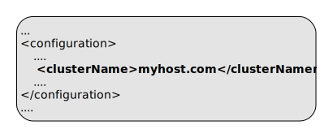
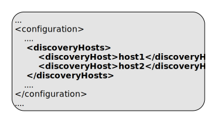
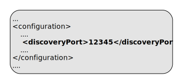
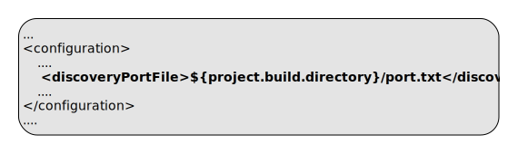
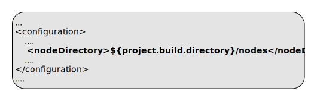
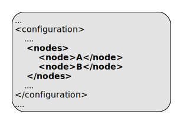
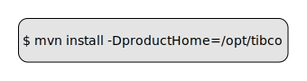
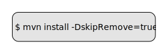
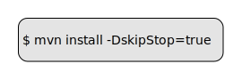

Cloud Software Group, Inc.
Cloud Software Group, Inc.ep:stop-nodes
Full name:
com.tibco.ep:ep-maven-plugin:2.3.0:stop-nodes
Description:
Stop and remove nodes.
When executed in clean phase, any errors found will be logged but won't cause the build to fail. When executed in a phase other than clean, a stop failure will fail the build.
Attributes:
- Requires a Maven project to be executed.
- The goal is thread-safe and supports parallel builds.
Optional Parameters
| Name | Type | Since | Description |
|---|---|---|---|
<clusterName> |
String |
1.0.0 |
cluster name to append to the node names. Nodes are started with a service name obtained by concatenating the node names and the cluster name. For example with a node name of A plus a cluster name of test results in a service name of A.test. Example use in pom.xml: Default: ${project.artifactId} |
<discoveryHosts> |
String[] |
1.0.0 |
List of host names for the client discovery. This is used on each administration client invocation. Example use in pom.xml:  |
<discoveryPort> |
Integer |
1.0.0 |
Port number for discovery. If not set a random free port is selected and persisted to a file Example use in pom.xml: Example use on commandline:  User Property: discoveryPort |
<discoveryPortFile> |
File |
1.0.0 |
Filename to be used to store generated discovery port Example use in pom.xml: Default: ${project.build.directory}/discovery.port |
<failOnStopError> |
boolean |
1.0.0 |
Set this to 'false' to ignore errors on node stop
Example use in pom.xml: Example use on commandline: Default: trueUser Property: failOnStopError |
<installPath> |
String |
1.6.0 |
Node installation path - overrides servicename, nodes are ignored |
<nodeDirectory> |
File |
1.0.0 |
Base directory of test nodes. Example use in pom.xml: Default: ${project.build.directory}/test-nodes |
<nodes> |
String[] |
1.0.0 |
List of node names. If not set, a single node A is used. Example use in pom.xml:  |
<password> |
String |
1.0.0 |
Password Example use in pom.xml:  |
<productHome> |
File |
1.0.0 |
Product home location. This path is resolved in the following way :
Example use in pom.xml: 
Example use on commandline: User Property: com.tibco.ep.ep-maven.product |
<skipRemove> |
boolean |
1.0.0 |
Set this to 'true' to skip removing test nodes Example use in pom.xml: Example use on commandline: Default: falseUser Property: skipRemove |
<skipStop> |
boolean |
1.0.0 |
Set this to 'true' to skip stopping test nodes Example use in pom.xml: 
Example use on commandline: User Property: skipStop |
<userName> |
String |
1.0.0 |
User name. If not set authentication is by platform credentials Example use in pom.xml:  |
Parameter Details
<clusterName>
cluster name to append to the node names.
Nodes are started with a service name obtained by concatenating the node names and the cluster name. For example with a node name of A plus a cluster name of test results in a service name of A.test.
Example use in pom.xml:
- Type:
java.lang.String - Since:
1.0.0 - Required:
No - Default:
${project.artifactId}
<discoveryHosts>
List of host names for the client discovery.
This is used on each administration client invocation.
Example use in pom.xml:
- Type:
java.lang.String[] - Since:
1.0.0 - Required:
No
<discoveryPort>
Port number for discovery. If not set a random free port is selected and persisted to a file
Example use in pom.xml:
Example use on commandline:
- Type:
java.lang.Integer - Since:
1.0.0 - Required:
No - User Property:
discoveryPort
<discoveryPortFile>
Filename to be used to store generated discovery port
Example use in pom.xml:
- Type:
java.io.File - Since:
1.0.0 - Required:
No - Default:
${project.build.directory}/discovery.port
<failOnStopError>
Example use in pom.xml:
Example use on commandline:
- Type:
boolean - Since:
1.0.0 - Required:
No - User Property:
failOnStopError - Default:
true
<installPath>
- Type:
java.lang.String - Since:
1.6.0 - Required:
No
<nodeDirectory>
Base directory of test nodes.
Example use in pom.xml:
- Type:
java.io.File - Since:
1.0.0 - Required:
No - Default:
${project.build.directory}/test-nodes
<nodes>
List of node names. If not set, a single node A is used.
Example use in pom.xml:
- Type:
java.lang.String[] - Since:
1.0.0 - Required:
No
<password>
Password
Example use in pom.xml:
- Type:
java.lang.String - Since:
1.0.0 - Required:
No
<productHome>
Product home location. This path is resolved in the following way :
- If property com.tibco.ep.ep-maven.product is set, use that, else
- If environment variable TIBCO_EP_HOME is set, use that, else
- Use localrepository/../product-group/product-artifact/product-version (so default is ~/.m2/product-group/product-artifact/product-version)
Example use in pom.xml:
Example use on commandline:
- Type:
java.io.File - Since:
1.0.0 - Required:
No - User Property:
com.tibco.ep.ep-maven.product
<skipRemove>
Set this to 'true' to skip removing test nodes
Example use in pom.xml:
Example use on commandline:
- Type:
boolean - Since:
1.0.0 - Required:
No - User Property:
skipRemove - Default:
false
<skipStop>
Set this to 'true' to skip stopping test nodes
Example use in pom.xml:
Example use on commandline:
- Type:
boolean - Since:
1.0.0 - Required:
No - User Property:
skipStop
<userName>
User name. If not set authentication is by platform credentials
Example use in pom.xml:
- Type:
java.lang.String - Since:
1.0.0 - Required:
No